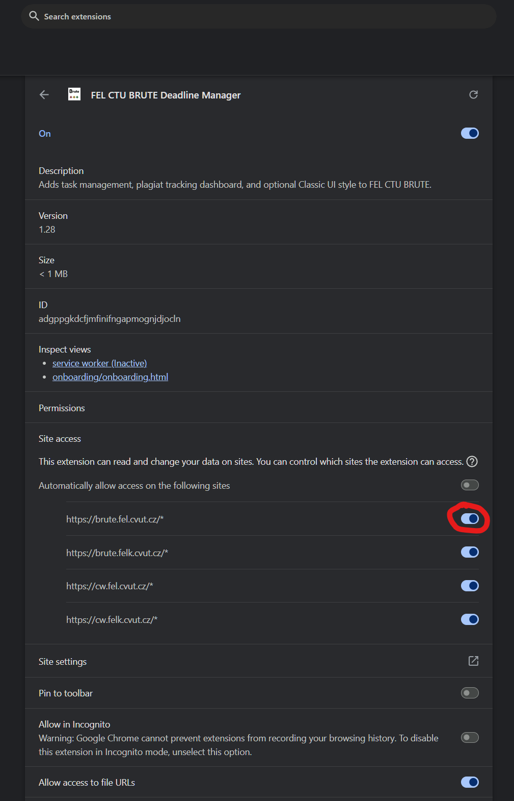

1. Permissions & Status
⚠️ PERMISSIONS REQUIRED
⚠️ ACTION REQUIRED: Enable BRUTE Site Permissions!
Required: brute.fel.cvut.cz, cw.felk.cvut.cz, cw.fel.cvut.cz, brute.felk.cvut.cz
Google Chrome — Enable Site Access:
- Click Grant Permissions above, or click Open Extension Settings ↗.
- Scroll to Site access.
- Enable "Automatically allow access on the following sites" (all 4 BRUTE URLs ON):

2. Features Overview
Auto-Sync Active
💻 Open Source Project (GitHub)
github.com/ProfiPoint/brute-extension ↗
Want to contribute, report a bug, fork, or submit a Pull Request?